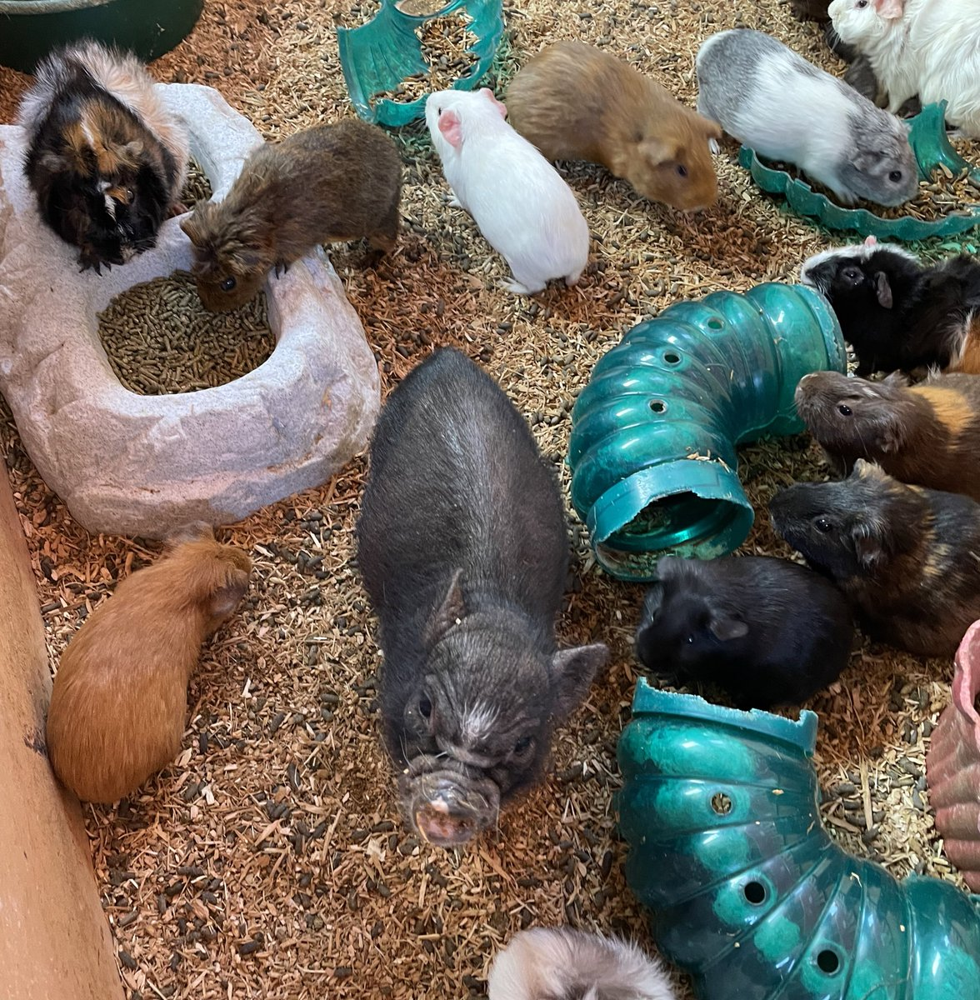

  	<div class="flex-wrap">
      
  	  <article class="tweet  " id="main">
  	    <p class="full_text">
  	      When developers design a class inheritance hierarchy <div class="gallery"><ul><li><a href="../../tweets_media/1581316467018338305-FfH27CzaEAAtmvN.jpg"></a></li></ul></div>
  	    </p>
  	    <p class="created_at">
  	      10/15/2022, 9:09:59 AM
  	    </p>
  	    <p class="favorite_count">Favs: 2</p>
  	    <p class="retweet_count">Retweets: 0</p>
  	    <a class="permalink" href="../1581316467018338305">link</a>
  	  </article>

  	</div>
  </div>
